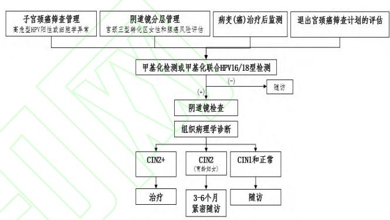

1Background & Framework
- Scope: definition · clinical significance · testing specs · data processing · full-course application.
- Method: OCEBM evidence grading; expert vote — >90% strong, 70–90% recommend.
- Platforms: PCR (simple) · nucleic-acid mass spec (mid-throughput) · NGS (high-throughput, complex, costly).
2Testing Standards
Minimize
transport time · early separation
No heparin
avoid hemolysis
2-step
centrifugation for cfDNA
- Sample: no freeze of RBC blood before separation; preservative solution for stool.
- Quality: concentration · purity · integrity per sample type; fragment profile to exclude gDNA contamination.
- Conversion: bisulfite or enzymatic, fit specimen & application.
- Platform choice: balance marker number · scenario · conditions (PCR/mass-spec/NGS).
Bisulfite
conversion
Enzymatic
conversion
PCR/MS/NGS
platforms
Conc.
quality metric
Purity
quality metric
Integrity
quality metric
- Reproducibility: essential before clinical adoption of any methylation assay.
- Purpose-fit: screening, diagnosis, companion & MRD each shape assay design.
- Data pipeline: raw → QC → methylation levels → clinical interpretation.
- Blood for cfDNA: sufficient volume, two-step centrifugation, no freeze before separation.
- Data QC: platform-dependent thresholds; reproducibility & stability required.
- Validation: each specimen type has its own quality acceptance criteria.
- Technology watch: follow latest conversion & platform advances.
Consensus: sampling, extraction/conversion & platform selection all standardized (strong recommendations); assay choice balances markers, scenario & lab conditions.
3Product Use Scenarios — Cervical & Endometrial
PAX1 / JAM3 (CISCER)
Cervical brushing methylation — hrHPV(+) triage, cytology-free stratification; recommended by consensus.
宫颈癌
CDO1 / CELF4 (CISENDO)
Cervical/uterine brushing methylation — endometrial cancer detection & screening; recommended by consensus.
子宫内膜癌
Cervical cancer screening pathway (4)
① hrHPV(+) high-risk / cytology-abnormal stratification · ② TZ3 & potential adenocarcinoma risk · ③ post-treatment monitoring · ④ exit-screening assessment.
Endometrial cancer screening pathway (3)
① imaging + methylation co-screening · ② genital bleeding stratified management · ③ high-risk population screening.
4Recommended Flowchart — Cervical Cancer Methylation (Fig 1)

Fig 1 · Suggested workflow for cervical cancer DNA methylation screening
Entry: HPV(+) high-risk or cytology-abnormal women → methylation triage → colposcopy decision; extended: TZ3/adenocarcinoma risk, post-treatment monitoring & exit assessment.
4
cervical pathways
3
endometrial pathways
2
endorsed dual-gene kits
- PCDHGB7: SJTU IHPH — specificity superior to cytology in non-16/18 hrHPV+ triage.
- PAX1 methylation: 2 large Chinese studies — hrHPV+ stratified management.
- CDO1/CELF4: endometrial Se/Sp validated; BHLHE22/CDO1/HAND2 Se 86.0%.
- Approved exfoliated kits: cervical · bladder · CRC · lung (NMPA).
- Endometrial PCDHGB7: early Se 85.71%/Sp 80.60% — CE certified.
- Self-sampling: tampon samples match physician collection.
Fig 1 + pathways anchor recommended usage — endorses PAX1/JAM3 (cervical) & CDO1/CELF4 (endometrial).